Overview
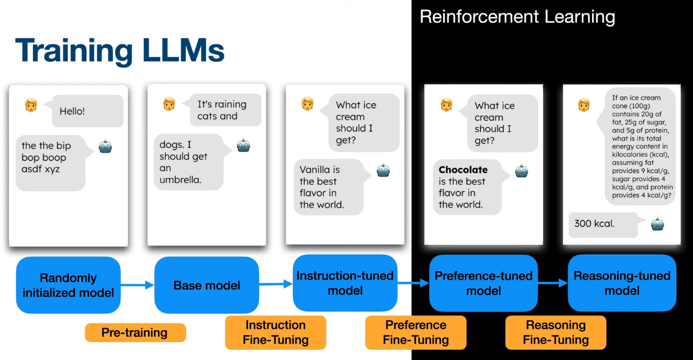
Source: Julia Turc
So, to begin with, here is the big picture of how a modern large language model is trained.
As you can see, there are several stages, from left to right.
It starts with pre-training , followed by instruction fine-tuning .
These two stages use self-supervised and supervised learning.
Then come preference fine-tuning and reasoning fine-tuning .
And if you look at the black area on the right, you see that these two stages use reinforcement learning .
Above each model, there is an example of what it answers.
So let's go through these stages, one by one.
Overview
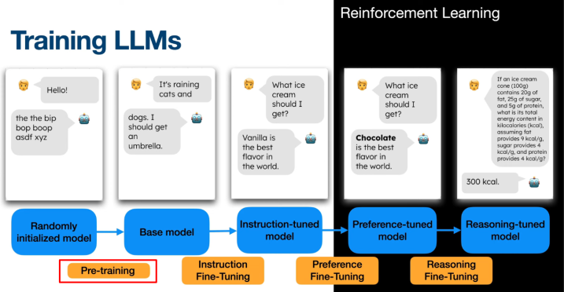
Source: Julia Turc
The model is first trained using self-supervised learning on a massive amount of text data.
It all starts with a randomly initialized model .
If you say "Hello!" to it, it answers random tokens.
So, the model is first trained using self-supervised learning on a massive amount of text data.
Its task is simple: it must predict the next token .
No labels are needed, because the text itself is the supervision.
This stage is the pre-training , and it is the most expensive one in compute.
Overview
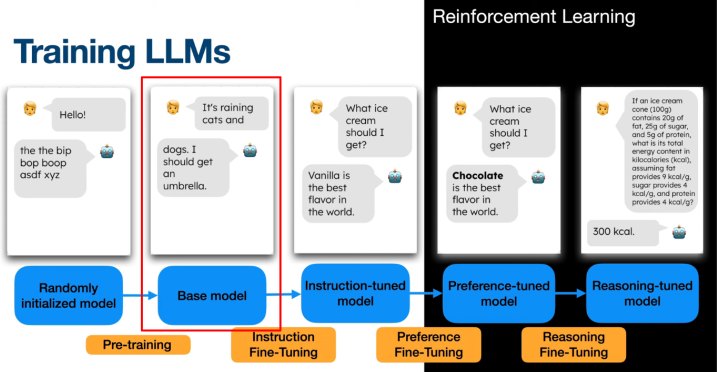
Source: Julia Turc
This produces a sophisticated auto-completer that cannot easily interact with humans.
This produces a base model , which is very good at completing text .
For example, if you write "It's raining cats and", the model continues with "dogs. I should get an umbrella."
But it is essentially a sophisticated auto-completer .
It cannot reliably answer questions, or follow instructions ,
and it cannot hold a natural conversation either.
In fact, if you ask it a question, it may just continue with more questions.
Overview
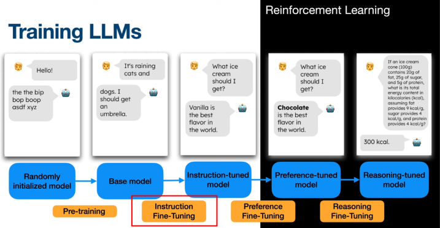
Source: Julia Turc
To make the model more useful we apply instruction fine-tuning or Supervised Fine-Tuning (SFT)
To make the model more useful, we apply instruction fine-tuning , or supervised fine-tuning , SFT.
In other words, we fine-tune it with supervised learning .
For that, we use a dataset of instructions , paired with high-quality answers written by humans.
Then we train the model to imitate these answers.
It is the same next-token prediction as before, but on carefully chosen data.
This way, the model learns the format of a dialogue: a question, then a helpful answer.
Overview
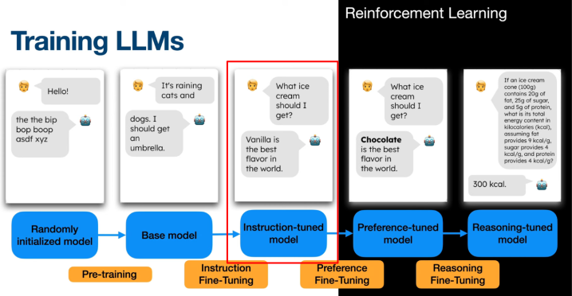
Source: Julia Turc
Now the model can follow instructions, answer questions, and chat more naturally.
The result is an instruction-tuned model .
Now the model can follow instructions , answer questions, and chat more naturally.
For example, if you ask it "What ice cream should I get?", it gives a real answer: "Vanilla is the best flavor in the world."
But it may still generate outputs that are misaligned with human preferences .
These answers may be correct, but they are not the ones people prefer.
Or they may be unhelpful, wrong, or even harmful .
And, as we'll see, SFT alone can't easily fix this.
Overview
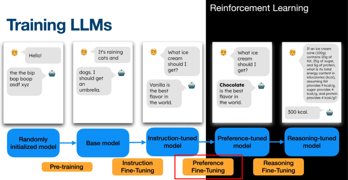
Source: Julia Turc
A second stage of fine-tuning is applied.
Historically, OpenAI used PPO within the Reinforcement Learning from Human Feedback (or RLHF) framework to achieve this.
So, a second stage of fine-tuning is applied.
It is called preference fine-tuning , and it is the first stage where reinforcement learning comes in.
Look at the example: it's the same question, but now the answer is "Chocolate is the best flavor".
Why chocolate?
Simply because, in our little example, that's what people prefer .
So the model now gives the answers that humans like best.
Historically, OpenAI did this with PPO , Proximal Policy Optimization,
inside a framework called Reinforcement Learning from Human Feedback , or RLHF.
Preference-based fine-tuning
Motivations
Why do we need a second stage of fine-tuning?
Supervised fine-tuning alone cannot guarantee outputs that are fully aligned with human preferences.Collecting larger, high-quality human-labeled datasets is too expensive or impractical .
Preference-based fine-tuning only asks humans to compare model outputs (which answer is better?) instead of writing ideal answers → much cheaper .
So, why do we need this second stage?
There are mainly two reasons.
First, supervised fine-tuning alone cannot guarantee outputs that are fully aligned with human preferences.
Second, there is the cost of data .
To go further with SFT, we would need larger datasets of high-quality answers, written by humans,
and that's too expensive , or just impractical.
Preference fine-tuning, by contrast, uses another kind of human feedback .
Here, the annotator doesn't write the ideal answer.
Instead, they just compare a few answers generated by the model, and say which one is better.
This is much cheaper , and faster.
It also works when people can recognize a good answer more easily than they can write one.
Think of a poem, or a good summary: it's easy to judge, but hard to write.
Preference-based fine-tuning
With RLHF/PPO
So, let's see how preference fine-tuning works with RLHF and PPO .
But first, we need to take a step back, and generalize the RL framework a little bit.
This is because, for a chatbot, there is no reward function given by the environment.
Learn from feedback
A generalization of the RL framework
RL agents need feedback to learn preferred behaviors
Usually provided by a reward function (maps states/actions to scalar values)
Explicit reward functions can be hard to design in real-world tasks Alternative feedback sources (e.g., human preferences, demonstrations) can guide learning
This generalizes RL to "learning from feedback "
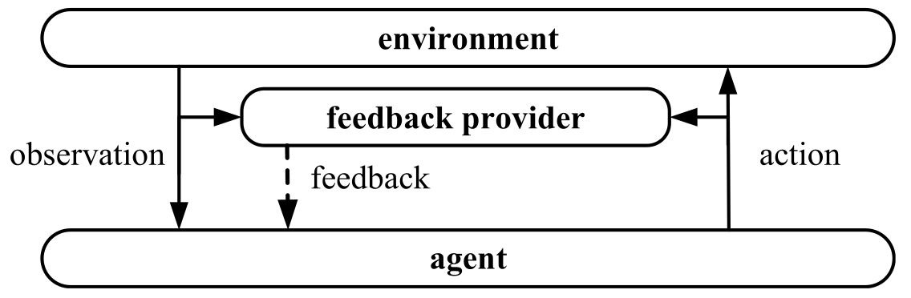
Source: Z. Xiao, Reinforcement Learning, https://doi.org/10.1007/978-981-19-4933-3_16
To learn, an RL agent needs feedback , that is, some signal that tells it which behaviors are preferred.
Usually, this feedback is a reward function , which maps states and actions to a scalar value.
But in many real-world tasks, an explicit reward function is very hard to design .
For example, what is the reward for a "good" answer of a chatbot?
In such cases, we can use other kinds of feedback to guide learning,
like human preferences, or demonstrations.
You can see this on the diagram.
We still have the usual loop: the agent acts on the environment, and receives observations.
But in the middle, there is a new box: the feedback provider .
It watches the observations and the actions, and it sends feedback to the agent.
So this generalizes RL to "learning from feedback ".
Reward Model
A quick introduction
When a reward function is unavailable, we may learn a reward model from data (e.g., expert demonstrations, human preferences).
Use the reward model’s output as reward signals for RL algorithms.
Learning it from expert demonstrations is known as Inverse Reinforcement Learning (IRL) .
IRL will be covered in more detail next week.
So, what can we do when no reward function is available?
Well, we can learn one.
We train a reward model from data,
and then we use its output as the reward signal for a standard RL algorithm.
But what kind of data can we use?
For example, learning it from expert demonstrations is known as Inverse Reinforcement Learning ,
or IRL for short.
The idea is to infer the reward that the expert seems to optimize.
We'll come back to IRL in more detail later in the course.
In the next slides, though, the reward model is learned from another kind of data: human preferences .
PbRL: Preference-based RL
Key Idea:
Instead of scalar rewards, use preferences over trajectory segments as feedback.
Train a reward model to predict which segment is preferred.
Use the learned reward model to provide reward signals for RL algorithms.
Enables learning from comparative feedback rather than absolute rewards.
👉 When the environment does not provide a reward function , but a preference feedback , we do Preference-based RL (PbRL).
Here is one example of feedback that is not a scalar reward: preferences .
The idea is to show two trajectory segments to someone, and to ask which one they prefer.
Then we train a reward model to predict these preferences,
so that the preferred segment gets a higher total reward .
Technically, the probability of preferring A over B is a sigmoid of the difference of their rewards.
Finally, the learned reward model provides the reward signal for the RL algorithm.
In other words, we learn from comparative feedback , not from absolute rewards.
This helps, because it's often easier to say "A is better than B" than to give a score, like 7 out of 10.
So, when the environment does not provide a reward function, but a preference feedback , we do Preference-based RL .
RLHF
Reinforcement Learning from Human Feedback
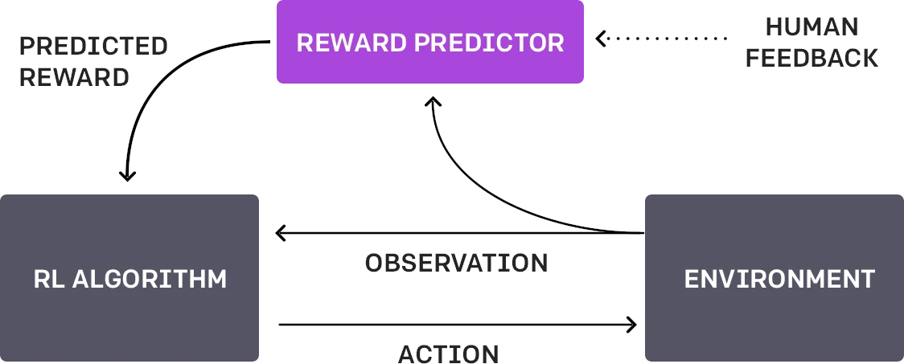
Source: https://openai.com/index/learning-from-human-preferences/
👉 When this preference feedback is provided by a human during training, we do Reinforcement Learning from Human Feedback (RLHF)
And when this preference feedback is provided by a human during training, we do Reinforcement Learning from Human Feedback ,
or RLHF for short.
Let's look at the diagram.
At the bottom, there is the usual RL loop: the RL algorithm sends actions to the environment, and gets observations.
But this time, the reward does not come from the environment.
Instead, it comes from a reward predictor , in purple.
This reward predictor is trained with human feedback , on the right,
and it gives a predicted reward to the RL algorithm.
All three processes run in parallel , asynchronously:
the agent acts, the human compares clips, and the reward predictor is updated.
RLHF
Reinforcement Learning from Human Feedback
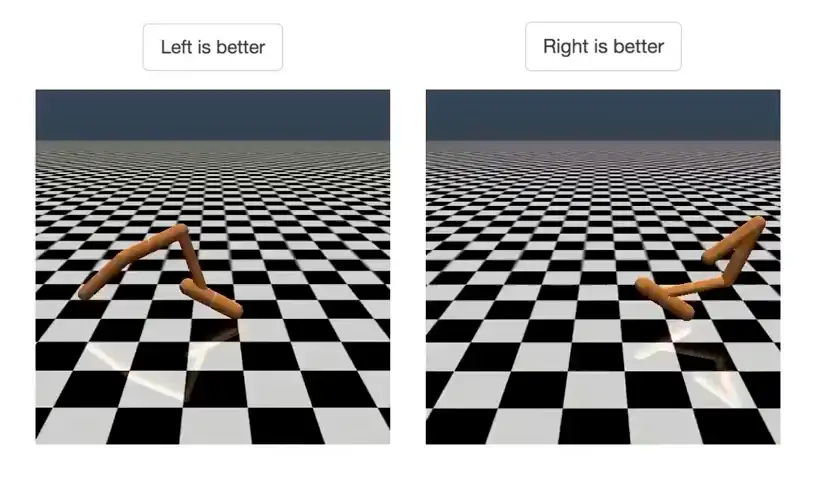
Source: https://openai.com/index/learning-from-human-preferences/
RLHF introduced by OpenAI and DeepMind (2017) for simulated robots and Atari games.
First, agent acts randomly; human compares pairs of video clips and selects the one closer to the objective (e.g., backflip).
Algorithm learns a reward function that matches human preferences.
Uses RL to optimize agent behavior toward the learned goal.
Continually requests human feedback on uncertain trajectory pairs to refine the reward model.
High feedback efficiency: backflip task required less than 1000 bits of human feedback.
RLHF was introduced in 2017, by OpenAI and DeepMind .
At first, it was not used for language at all, but for simulated robots and Atari games.
Here is how it works.
In the beginning, the agent acts randomly.
Then, periodically, a human watches two short video clips of its behavior, like the two on the slide,
and clicks on "left is better", or "right is better".
The question is: which clip is closer to the objective?
In this case, the objective is to do a backflip .
From these choices, the algorithm builds a model of the goal: the reward function that best explains them.
Then it uses RL to reach that goal.
And as it improves, it asks for feedback on the pairs where it is most uncertain .
This makes it very efficient in human feedback: the backflip needed only about 900 bits of feedback,
where one bit is roughly one comparison, left or right.
RLHF
Reinforcement Learning from Human Feedback
Source: https://openai.com/index/learning-from-human-preferences/
And here is the result: a backflip .
It took less than an hour of a human evaluator's time,
and there was no explicit reward function at all.
Just try to write a reward function for a nice backflip by hand: it's really hard!
Here, by contrast, the human just had to recognize good attempts.
To be fair, though, it's not cheap in interactions with the environment :
in the background, the agent collected about 70 hours of simulated experience.
RLHF
Application to LLMs
🤨
Source: https://x.com/nathanlents/status/1735034140930572791
RLHF was first developed for training robots and Atari agents.
Quickly adapted for large language models (LLMs).
ChatGPT users regularly see feedback requests.
User feedback is leveraged to further align LLMs via RLHF.
OK, so RLHF was first developed for training robots and Atari agents.
But it was quickly adapted to large language models .
In fact, you have probably seen this in ChatGPT : "Which response do you prefer?"
This is exactly a preference comparison .
And this free work from users can then be used to further align the model.
RLHF
Application to LLMs
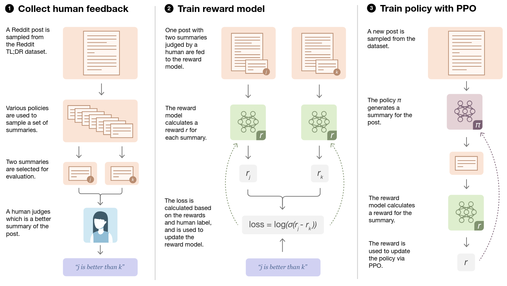
Source: Stiennon, N., Ouyang, L., Wu, J., Ziegler, D., Lowe, R., Voss, C., ... & Christiano, P. F. (2020). Learning to summarize with human feedback. Advances in neural information processing systems, 33, 3008-3021.
In 2020, OpenAI used RLHF to train models to summarize text .
This figure shows the three steps of RLHF.
The first step is to collect human feedback .
We take a Reddit post, and several policies generate summaries of it.
Then a human compares two of these summaries, and says which one is better: "j is better than k".
The second step is to train a reward model .
This model gives a score r to each summary,
and the loss pushes the score of the preferred summary above the other one.
More precisely, we maximize the log of a sigmoid of r j minus r k.
The third step is to train the policy with PPO .
For a new post, the policy writes a summary, and the reward model scores it.
Then PPO uses this score as the reward to update the policy.
On top of that, a KL penalty keeps the policy close to the initial model, to avoid reward hacking.
RLHF
Application to LLMs
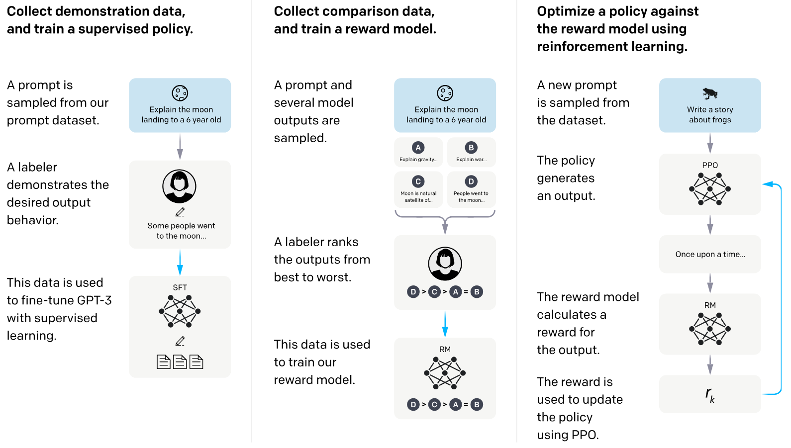
Source: Ouyang, L., Wu, J., Jiang, X., Almeida, D., Wainwright, C., Mishkin, P., ... & Lowe, R. (2022). Training language models to follow instructions with human feedback. Advances in neural information processing systems, 35, 27730-27744.
Then, in 2022, OpenAI used it to train InstructGPT ,
a GPT-3 model fine-tuned to follow instructions with human feedback.
It is the direct predecessor of ChatGPT .
Here again, there are three steps.
In step one, for a prompt like "explain the moon landing to a 6 year old", a labeler writes the desired answer,
and GPT-3 is fine-tuned on these answers: that's SFT .
In step two, the model generates several answers, and a labeler ranks them, from best to worst.
These rankings are used to train the reward model .
And in step three, PPO optimizes the policy against this reward model.
So this is exactly the full pipeline of the overview: SFT first, then preference fine-tuning with RL.
RLHF
Application to LLMs
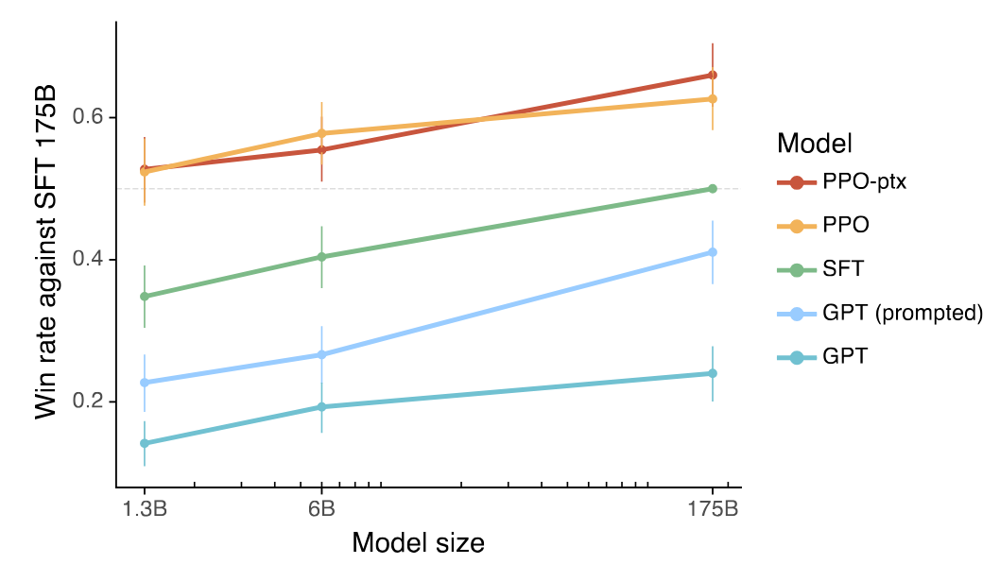
Source: Ouyang, L., Wu, J., Jiang, X., Almeida, D., Wainwright, C., Mishkin, P., ... & Lowe, R. (2022). Training language models to follow instructions with human feedback. Advances in neural information processing systems, 35, 27730-27744.
So, did it work?
Yes: human evaluators clearly preferred InstructGPT to GPT-3.
On this plot, the y-axis is the win rate against the 175-billion-parameter SFT model,
that is, how often each model's answers were preferred to that model's answers.
And the x-axis is the model size.
At the bottom, the two GPT-3 curves, in blue, stay low, even with a good prompt.
Above them, in green, are the SFT models.
And at the top, there are the two RLHF models: PPO , and PPO-ptx , the actual InstructGPT.
PPO-ptx also mixes some pretraining gradients into the PPO updates,
in order to limit regressions on standard NLP benchmarks.
And here is the key result:
the 1.3 billion InstructGPT is preferred to the 175 billion GPT-3,
which is a model more than 100 times larger!
RLHF
Advantages and drawbacks
Advantage:
Compared to offline preference fine-tuning methods such as Direct Preference Optimization (DPO), the Reward Model can score new outputs generated by the policy during training → well-tuned RLHF often performs better with the same human feedback.
Drawbacks:
Training can be unstable; the Reward Model may be inaccurate, leading to misaligned or unintended behaviors.
The PPO policy may exploit Reward Model weakness (reward hacking).
So, why use RL here, and not something simpler?
Well, RLHF has one big advantage over offline methods, like Direct Preference Optimization , or DPO.
DPO learns only from a fixed dataset of compared answers.
In RLHF, by contrast, the learned reward model can score new answers , generated by the policy during training.
So the same human feedback is exploited further,
and, as a result, well-tuned RLHF with PPO often performs better than DPO.
But RLHF also has drawbacks .
First, training can be unstable .
And the reward model may be inaccurate, leading to misaligned or unintended behaviors.
Worse, the policy may exploit the weaknesses of the reward model.
This is called reward hacking .
For example, reward models often prefer longer answers, so the model may learn to be verbose.
RLHF
References
Christiano, P. F., Leike, J., Brown, T., Martic, M., Legg, S., & Amodei, D. (2017). Deep reinforcement learning from human preferences. Advances in neural information processing systems, 30.
(OpenAI blog )
Stiennon, N., Ouyang, L., Wu, J., Ziegler, D., Lowe, R., Voss, C., ... & Christiano, P. F. (2020). Learning to summarize with human feedback. Advances in neural information processing systems, 33, 3008-3021.
(OpenAI blog )
Ouyang, L., Wu, J., Jiang, X., Almeida, D., Wainwright, C., Mishkin, P., ... & Lowe, R. (2022). Training language models to follow instructions with human feedback. Advances in neural information processing systems, 35, 27730-27744.
(OpenAI blog )
Here are the three main references for RLHF.
The first one is the original paper , by Christiano and colleagues, in 2017, with the robots and the Atari games.
The second one, by Stiennon and colleagues, in 2020, is about summarization .
And the third one, by Ouyang and colleagues, in 2022, is the InstructGPT paper.
Each one also comes with a blog post from OpenAI, which is a good place to start.
Overview
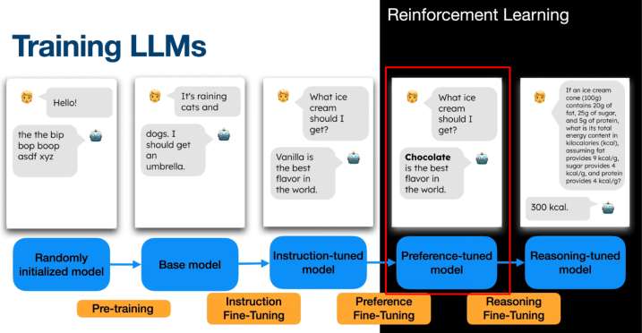
Source: Julia Turc
RLHF/DPO produced a model more aligned with human preferences.improve reasoning skills .
OK, so RLHF, or DPO, gives us a preference-tuned model ,
that is, a model more aligned with human preferences .
But a third stage of fine-tuning can be applied, to improve reasoning skills .
Look at the example on the right: it's a small math problem about the energy of an ice cream.
To answer it, the model must reason step by step , and compute 300 kilocalories.
Overview
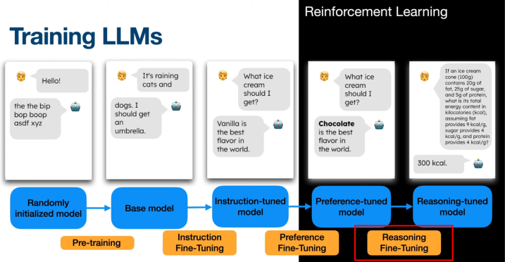
Source: Julia Turc
This was popularized by the open-source model DeepSeek-R1 in January 2025 with the GRPO algorithm
within the Reinforcement Learning with Verifiable Rewards (RLVR) framework.
This was popularized by the open-source model DeepSeek-R1 in January 2025 .
Of course, OpenAI's o1 came a few months earlier, but its training recipe was not public.
DeepSeek-R1 uses an algorithm called Group Relative Policy Optimization , or GRPO,
inside a framework called Reinforcement Learning with Verifiable Rewards , or RLVR.
Its goal is to improve the reasoning capabilities of the LLM.
Reasoning-based fine-tuning
With RLVR/GRPO
So, let's see how reasoning fine-tuning works, with RLVR and GRPO .
And here is the good news: this time, we don't even need humans to give the reward.
Reasoning-based fine-tuning
Context
Many reasoning tasks (math, coding, logic) have answers that can be automatically verified (e.g., final answer check, unit tests).
Unlike creative tasks, no human feedback is needed for evaluation.
Enables automatic, scalable assessment of LLM outputs.
DeepSeek-R1 adds a fine-tuning stage dedicated to reasoning, using RL with verifiable rewards.
There is a special class of problems called reasoning tasks ,
which includes math, programming, logic, and so on.
Unlike open-ended or creative tasks, many reasoning tasks have an answer that can be checked automatically .
For a math problem, for example, we compare the final answer with the reference answer .
And for code, we run unit tests .
This means that we can evaluate the LLM's answers automatically, without human feedback .
And this is scalable : we can use millions of problems, with no annotators.
That's why DeepSeek-R1 adds a fine-tuning stage dedicated to reasoning, using RL with verifiable rewards .
But be careful: the overview diagram is a simplification .
In practice, the order of the stages varies.
For instance, DeepSeek-R1 alternates several SFT and RL stages:
its first RL stage is for reasoning, and its last one also aligns the model with human preferences.
RLVR
Reinforcement Learning with Verifiable Rewards
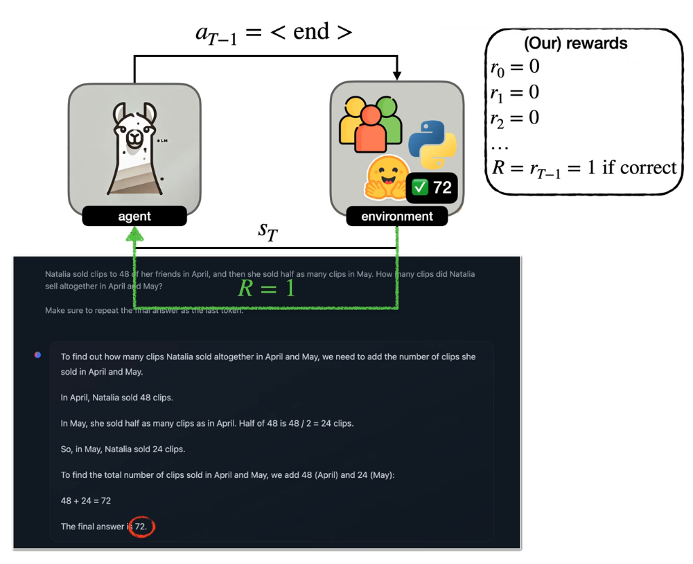
Source: Julia Turc
So here, RL is used to fine-tune the LLM, with a reward that is computed automatically .
This reward simply says whether the final answer is correct .
Let's look at the example at the bottom.
Natalia sold 48 clips in April, and half as many in May: how many did she sell in total?
The model reasons step by step, and ends with 72.
Then the environment checks it: 72 is correct, so the reward R equals one .
As you can see, the reasoning task fits well in the RL framework .
The agent is the LLM, and its policy outputs a probability for every token of the vocabulary.
Each action is one token, and the episode ends when the model outputs the end token.
The state is the current context, that is, the prompt plus the tokens generated so far.
And the reward comes only at the end: it is one if the answer is correct, and zero otherwise.
That's why, in the box on the right, all the intermediate rewards are zero.
Reasoning-based fine-tuning
Group Relative Policy Optimization (GRPO)
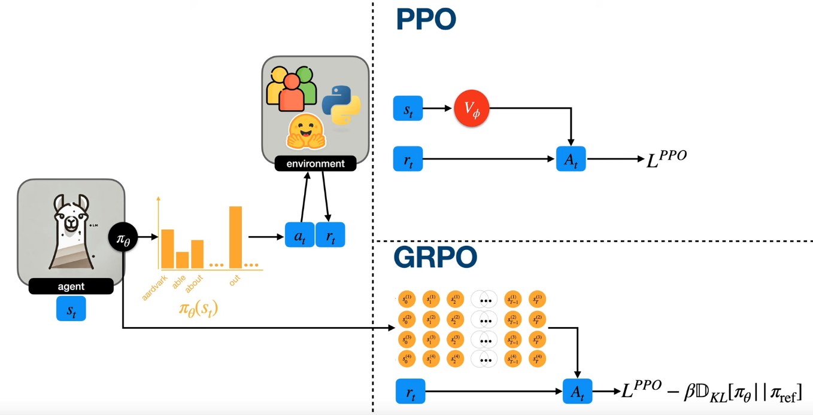
Source: Julia Turc
The RL algorithm used in DeepSeek-R1 is called Group Relative Policy Optimization , or GRPO.
It was introduced about one year earlier, in the DeepSeekMath paper,
and it is very close to PPO , with two differences .
On the left, you can see the usual loop: the LLM outputs a distribution over tokens, samples one, and gets a reward.
On the right, you can see how the advantage A t is computed.
At the top, PPO uses a critic , the value network V phi, in red, to estimate the advantage.
But in LLMs, this critic is usually as large as the policy itself, so it costs a lot of memory and compute.
At the bottom, GRPO gets rid of it: that's the first difference, no critic .
Instead, for each prompt, it generates a group of answers , here four of them,
and it computes the advantage by comparing each answer to the others in the group.
The second difference is the KL penalty , which keeps the policy close to the reference model.
In GRPO, it is added directly to the loss, instead of being subtracted from the reward, like in RLHF with PPO.
Reasoning-based fine-tuning
GRPO
$$
\theta \leftarrow \theta + \alpha \sum_{t=0}^{T-1} \nabla_{\theta} \log \pi_{\theta}(a_t \mid s_t) \cdot \bigl(G_t - b(s_t)\bigr)
$$
Let's see where the GRPO advantage comes from.
We start with an update rule you already know: REINFORCE with a baseline .
It increases the log-probability of each action a t, in state s t,
and it weights this increase by G t minus b of s t.
Here, G t is the return from time t, and b is a baseline .
So, if the return is better than the baseline, the action becomes more likely .
And if it's worse, it becomes less likely .
The baseline doesn't change the expected gradient, but it reduces the variance .
In actor-critic methods, and in PPO, this baseline is the value function , learned by the critic.
Reasoning-based fine-tuning
GRPO
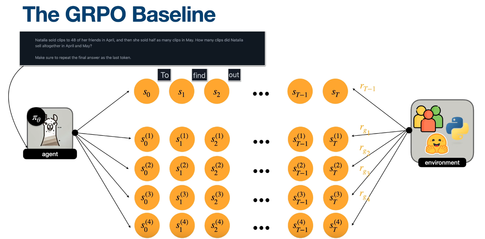
Source: Julia Turc
Now, how does GRPO get its baseline, without a critic ?
Let's start with the top row.
The prompt is the Natalia problem,
and the LLM generates one answer, token by token: "To", "find", "out", and so on.
Each token is an action, and each circle is a state.
And as we saw, the reward comes only at the very end.
Now, here is the trick: for the same prompt , we sample several answers .
In this figure, we have a group of four.
Since the policy is stochastic, the four answers are different,
and the environment gives each of them a reward: r g one, to r g four.
Reasoning-based fine-tuning
GRPO
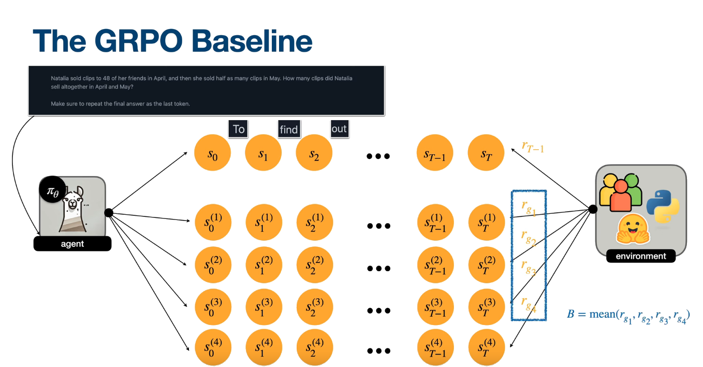
Source: Julia Turc
And here is the GRPO baseline :
B is simply the mean reward of the group .
Intuitively, B tells us how hard this prompt is for the current model.
So, if an answer does better than the group average , we push it up.
And if it does worse, we push it down.
This way, there is no critic network to train: we just sample more answers , and we compare them.
In other words, the other answers of the group play the role of the critic.
Reasoning-based fine-tuning
GRPO
$$
\theta \leftarrow \theta + \alpha \sum_{t=0}^{T-1} \nabla_{\theta} \log \pi_{\theta}(a_t \mid s_t) \cdot \bigl(G_t - b(s_t)\bigr)
$$
Becomes...
$$
\theta \leftarrow \theta + \alpha \sum_{t=0}^{T-1} \nabla_{\theta} \log \pi_{\theta}(a_t \mid s_t) \cdot (R - B)
$$
$$
\theta \leftarrow \theta + \alpha \sum_{t=0}^{T-1} \nabla_{\theta} \log \pi_{\theta}(a_t \mid s_t) \cdot A_t
$$
$$
A_t = \frac{R - \mathrm{mean}(r_{g_1}, \dots, r_{g_G})}{\mathrm{std}(r_{g_1}, \dots, r_{g_G})}
$$
So, let's update our formula.
First, the reward is given only at the end, and we don't discount.
So the return G t is the same for every token : it is the final reward, capital R.
And the baseline b becomes the group mean, capital B.
That's why we get R minus B .
Then, GRPO also divides by the standard deviation of the group rewards.
This gives the advantage A t: the reward minus the group mean, divided by the group standard deviation.
This normalization keeps the gradient scale stable, from one prompt to another.
Let's take a quick example, with four answers whose rewards are one, zero, zero, and one.
The mean is one half,
so the correct answers get a positive advantage, and the wrong ones get a negative advantage, of the same size.
And if all four answers are correct, all advantages are zero , so this prompt teaches nothing.
Reasoning-based fine-tuning
GRPO
$$
\begin{align}
L^{PPO} &= \sum_{t=0}^{T-1} \min \Bigl( \rho_t(\theta) \cdot A_t,\; \mathrm{clip}(\rho_t(\theta), 1 - \epsilon, 1 + \epsilon) \cdot A_t \Bigr) \\[6pt]
\rho_t(\theta) &= \frac{\pi_{\theta}(a_t \mid s_t)}{\pi_{\theta_{\text{old}}}(a_t \mid s_t)} \\[6pt]
L^{GRPO} &= L^{PPO} - \beta \, D_{KL}\!\left[\pi_{\theta} \,\|\, \pi_{\text{ref}}\right]
\end{align}
$$
Finally, GRPO plugs this advantage into the PPO objective.
You know this one already: L PPO.
Rho t is the probability ratio between the new policy and the old one, for action a t.
We multiply it by the advantage, and we clip the ratio between one minus epsilon and one plus epsilon.
Then we take the minimum of the two terms.
This way, one update cannot move the policy too far from the old one.
On top of that, GRPO subtracts a KL divergence term, weighted by beta.
This term measures how far the policy pi theta is from the reference model pi ref, usually the SFT model.
So it prevents the model from drifting too far, and from forgetting what it learned before.
To sum up, GRPO is PPO without a critic , with a group-based advantage, and a KL penalty in the loss.
DeepSeek-R1-Zero
Results
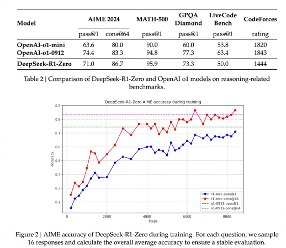
Source: Guo, D., Yang, D., Zhang, H., Song, J., Zhang, R., Xu, R., ... & He, Y. (2025). Deepseek-r1: Incentivizing reasoning capability in llms via reinforcement learning. arXiv preprint arXiv:2501.12948.
So, does it work?
Here are the results of DeepSeek-R1-Zero .
This model made a lot of noise, because it was trained with pure RL ,
directly from the base model, without any supervised fine-tuning.
And yet, it reached a performance comparable to OpenAI's o1 reasoning model.
On the plot, you can see the accuracy on AIME 2024 , a hard math competition, during training.
The blue curve is pass at one: it goes from about 16 percent to 71 percent .
The red curve uses majority voting over several samples, and it reaches about 87 percent.
For comparison, the dashed lines show o1-0912: 74 percent, and 83 percent with majority voting.
In the table, you can also see that R1-Zero is better on some benchmarks, like MATH-500, and worse on others, like coding.
And here is a fascinating detail: during training, its answers got longer and longer .
In other words, the model learned by itself to think longer, and to re-check its work.
GRPO / DeepSeek-R1
References
Shao, Z., Wang, P., Zhu, Q., Xu, R., Song, J., Bi, X., ... & Guo, D. (2024). Deepseekmath: Pushing the limits of mathematical reasoning in open language models. arXiv preprint arXiv:2402.03300.
Guo, D., Yang, D., Zhang, H., Song, J., Zhang, R., Xu, R., ... & He, Y. (2025). Deepseek-r1: Incentivizing reasoning capability in llms via reinforcement learning. arXiv preprint arXiv:2501.12948.
Here are two references for this part.
The first one is the DeepSeekMath paper, from 2024, which introduced GRPO.
The second one is the DeepSeek-R1 paper, from 2025.
Both are on arXiv, and the links are on the slide.
Practical open-source implementations
🤗 Hugging Face TRL
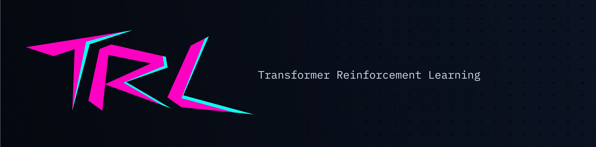
Now, how can you try all this yourself?
A very popular open-source library for that is TRL , from Hugging Face .
Its name stands for Transformer Reinforcement Learning .
Practical open-source implementations
🤗 Hugging Face TRL
"TRL is a full stack library where we provide a set of tools to train transformer language models with methods like Supervised Fine-Tuning (SFT) ,
Group Relative Policy Optimization (GRPO) ,
Direct Preference Optimization (DPO) ,
Reward Modeling, and more.
The library is integrated with 🤗 transformers."https://huggingface.co/docs/trl/
TRL is a full-stack library to fine-tune language models,
and it implements most of the methods we saw today.
For example, it has SFT for supervised fine-tuning,
DPO for preference fine-tuning without RL,
and GRPO for RL with verifiable rewards.
It also supports reward modeling, and more.
Also, the library is integrated with transformers ,
so you can fine-tune most open models with a few lines of Python.
Practical open-source implementations
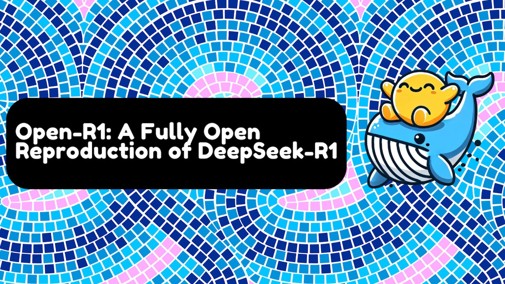
https://huggingface.co/blog/open-r1
Here is a great example of what you can do with it: Open-R1 .
When DeepSeek-R1 came out, the model weights were open, but the training data and code were not.
So Hugging Face started a project to build a fully open reproduction of DeepSeek-R1,
using TRL and its GRPO trainer.
If you want to see how this works in practice, it's a good place to start.
The blog post on the slide explains their plan, step by step.